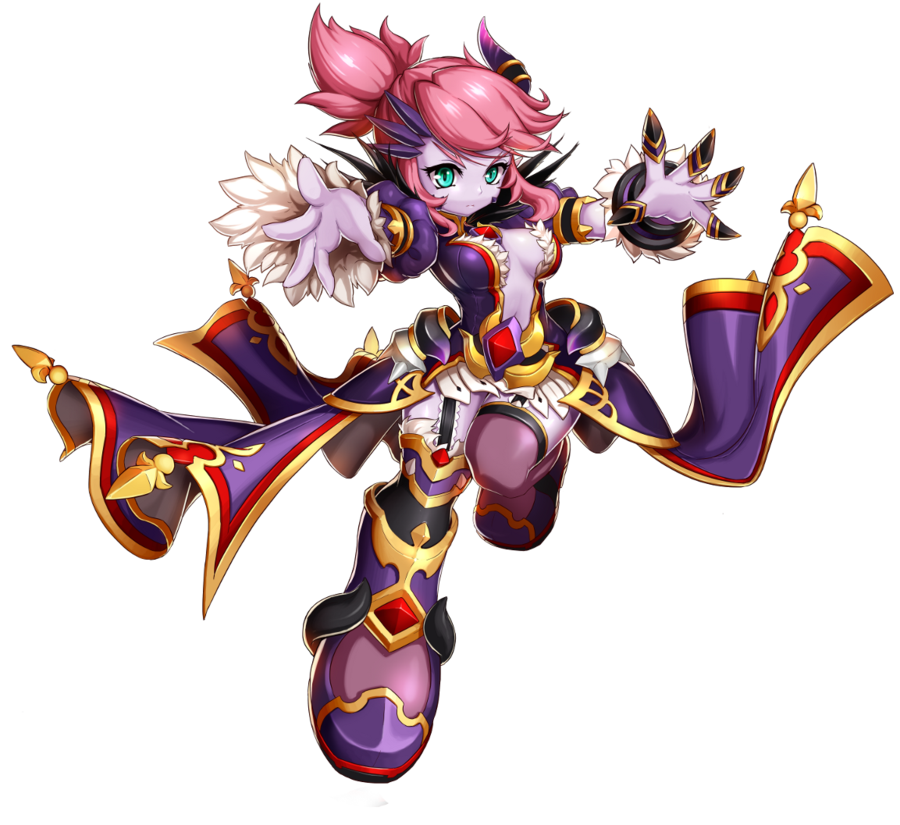
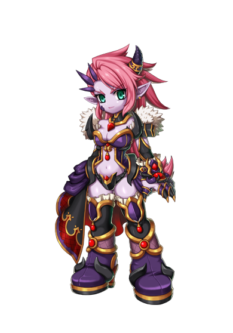
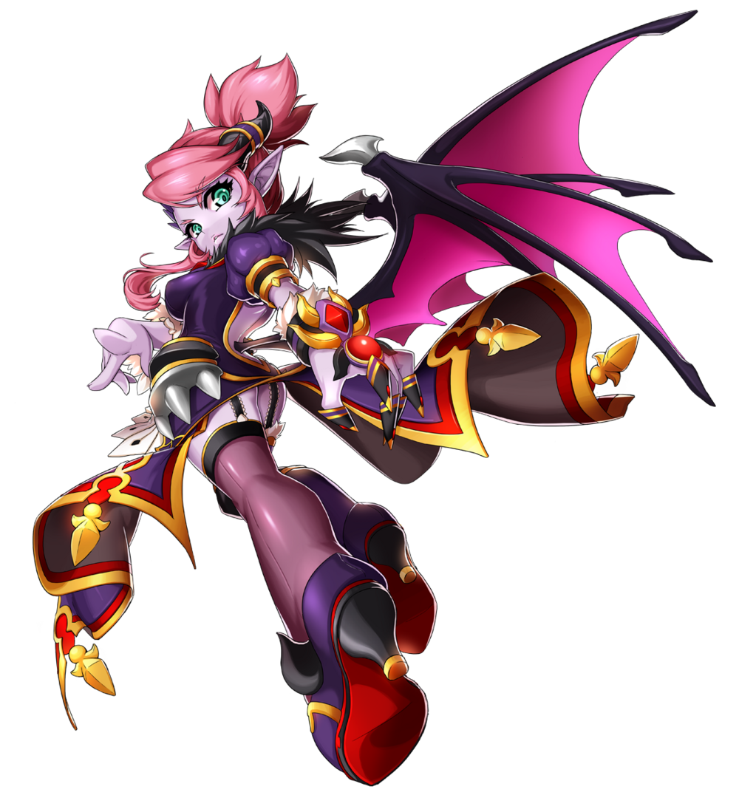
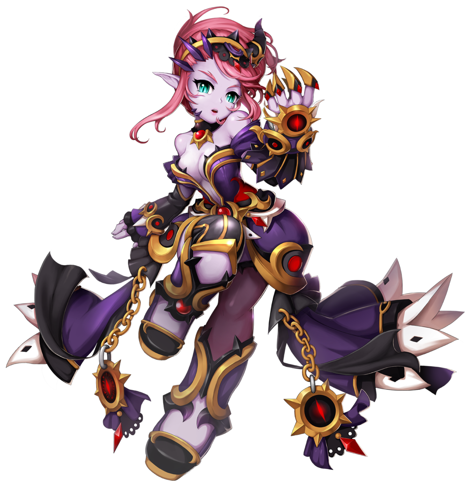
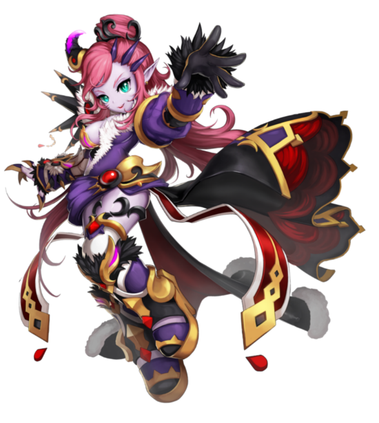

Informações Principais do Personagem
Nome: Rey Von Crimson River
Idade: Apesar de aparentar 18 anos, é tão velha que os humanos não conseguem contabilizar sua idade
Origem: Elyos

Rey é uma asmodiana, da mesma dimensão de Dio, seu amigo de infância. Assim como ele, Rey
também pertence a uma das famílias mais nobres e prestigiadas das Tribos Demoníacas, os Von
Crimson River. Sofisticada e culta, Rey herdou as poderosas habilidades mágicas de sua família e
as desenvolveu de forma incrível, ganhando grande controle sobre a gravidade. Além disso, Rey
desenvolveu um poder bastante especial, sendo capaz de invocar outras criaturas das trevas para
lhe obedecer.
Sempre protegida por seu mordomo James, que atende a todas as suas vontades, Rey é uma garota esnobe e convencida, muito elogiada por seu povo graças ao seu domínio sobre a magia. Exatamente por ter mais domínio mágico, Rey não gosta muito de participar de confrontos físicos. Estranhamente, ela nutre uma paixão secreta por lutas e adora assisti-las. Por mais que não admita seu gosto secreto, ele é bem visível, tanto que as pessoas ao seu redor costumam se meter em brigas apenas para agradá-la, buscando sua aprovação.
Sempre protegida por seu mordomo James, que atende a todas as suas vontades, Rey é uma garota esnobe e convencida, muito elogiada por seu povo graças ao seu domínio sobre a magia. Exatamente por ter mais domínio mágico, Rey não gosta muito de participar de confrontos físicos. Estranhamente, ela nutre uma paixão secreta por lutas e adora assisti-las. Por mais que não admita seu gosto secreto, ele é bem visível, tanto que as pessoas ao seu redor costumam se meter em brigas apenas para agradá-la, buscando sua aprovação.
O que ninguém imagina é que, na verdade, esse gosto por lutas foi herdado da segunda alma que
habita o corpo da garota, já que Rey é na verdade uma espécie de reencarnação mística da
lendária espadachim Edna, antiga amante de Duel, que adorava combates, mas faleceu durante a 1ª
Guerra Mágica. Acontece que, sem ninguém fora da família Von Crimson River saber, Rey havia
nascido com uma terrível doença, e seus médicos não lhe davam muitos anos de vida. Para esconder
sua fraqueza das demais famílias, Rey acabou sendo isolada pelos próprios pais e assim perdeu
contato com seu antigo amigo de infância.
Ao chegar ao equivalente nos padrões asmodianos à adolescência, Rey já estava muito mais fraca, às portas da morte. Nesta altura, as Tribos Demoníacas estavam em guerra contra Calnat, e enfrentando uma guerra civil. Seu pai, Peter Von Crimson River, o Líder Sanguinário, acabou se retirando da batalha para tentar encontrar algum modo de salvar a filha. Sem alternativas, decidiu realizar um antigo ritual proibido usando Contas Demoníacas. O que ele não esperava, é que para o ritual funcionar, seria necessário sacrificar outra vida.
Por coincidência, naquele momento, Duel, o líder da facção genocida das Tribos Demoníacas havia caído em uma armadilha. Seria o fim do guerreiro, não fosse o sacrifício de sua amada, Edna, uma jovem asmodiana radiante e cheia de energia, que adorava lutas acima de tudo. Edna acabou morrendo no lugar de Duel para salvá-lo, mas antes que seu espírito pudesse se libertar, ela se viu diante de outra garota, muito parecida com ela mesma. As Contas Demoníacas haviam capturado sua alma e a usaram para dar energia ao ritual que estava sendo realizado com Rey. E assim, os espíritos das duas se fundiram em um só.
Ao chegar ao equivalente nos padrões asmodianos à adolescência, Rey já estava muito mais fraca, às portas da morte. Nesta altura, as Tribos Demoníacas estavam em guerra contra Calnat, e enfrentando uma guerra civil. Seu pai, Peter Von Crimson River, o Líder Sanguinário, acabou se retirando da batalha para tentar encontrar algum modo de salvar a filha. Sem alternativas, decidiu realizar um antigo ritual proibido usando Contas Demoníacas. O que ele não esperava, é que para o ritual funcionar, seria necessário sacrificar outra vida.
Por coincidência, naquele momento, Duel, o líder da facção genocida das Tribos Demoníacas havia caído em uma armadilha. Seria o fim do guerreiro, não fosse o sacrifício de sua amada, Edna, uma jovem asmodiana radiante e cheia de energia, que adorava lutas acima de tudo. Edna acabou morrendo no lugar de Duel para salvá-lo, mas antes que seu espírito pudesse se libertar, ela se viu diante de outra garota, muito parecida com ela mesma. As Contas Demoníacas haviam capturado sua alma e a usaram para dar energia ao ritual que estava sendo realizado com Rey. E assim, os espíritos das duas se fundiram em um só.

Classes

Invocadora
Arma: Endless

Encantrix
Arma: Endless

Princesa de Elyos
Arma: Endless
